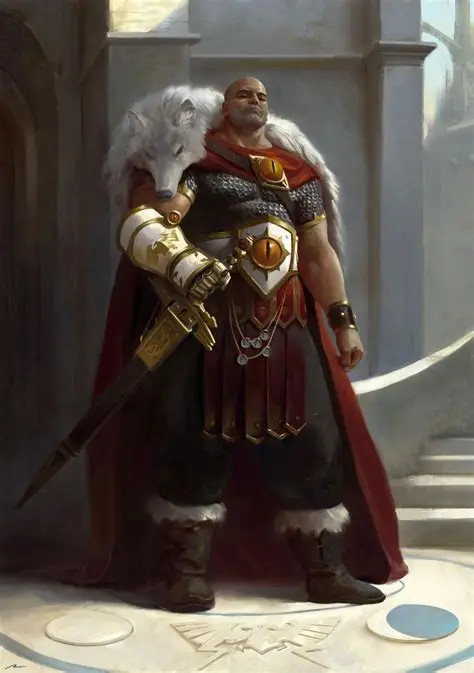
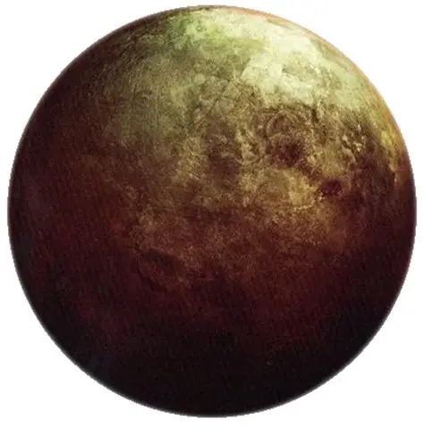

Horus Lupercal, Le Favori

Créé en tant qu’organisme génétiquement modifié par l’Empereur dans les laboratoires de gènes impériaux sous les montagnes de l’Himalaya (Himalaya) sur Terra à la fin du 30e millénaire, Horus, ainsi que ses frères primarques, ont été dispersés à travers la galaxie de la Voie lactée à travers le Warp par les machinations des Puissances Ruineuses du Chaos.
On dit que c’est à ce moment-là que les Dieux des Ténèbres ont planté pour la première fois les graines de l’hérésie dans l’enfant primarque, chuchotant sombrement dans son âme et le tentant à leur cause. La capsule transportant Horus, toujours en gestation, s’est immobilisée sur le monde minier de Cthonia, la planète principale d’un système stellaire à une distance raisonnable plus lente que la lumière de Terra.
Alors que l’histoire ancienne de nombreux primarques est largement documentée, bien qu’inégalement, on ne peut pas en dire autant d’Horus. La contradiction et l’omission ternissent tous les récits des années de formation d’Horus. Il est clair que l’Empereur a bien trouvé Horus et qu’il a également pris le commandement de la XVIe Légion au début de la Grande Croisade. Au-delà de ces faits manifestes, l’accord entre les premières sources impériales fait décidément défaut, certaines plaçant même Horus sur Cthonia en tant qu’enfant trouvé.
Comme beaucoup de ses frères surhumains, ces sources disent que le jeune primarque a prospéré dans l’environnement hostile de Cthonia, apprenant ses premières leçons de guerre et de meurtre des gangs de tueurs techno-barbares de Cthonia. Le monde de Cthonia avait été colonisé dès les premiers jours de l’exploration des étoiles par l’humanité, ses riches ressources naturelles ayant été impitoyablement exploitées jusqu’à ce qu’elles soient pratiquement épuisées.

Ainsi, Horus a atteint sa maturité parmi les gangers anarchiques qui peuplaient le cauchemar post-industriel d’un monde alvéolé de mines éteintes depuis longtemps et dominé par des villes-ruches en décomposition. Bien qu’Horus n’ait pas été élevé pendant ses années de formation sur Cthonia - rarement, pour un primarque, il n’avait pas mûri sur le monde berceau de sa Légion - il parlait couramment le langage dur connu sous le nom de Cthonic. En fait, il le prononçait avec le bord palatal dur particulier et les voyelles rugueuses d’un ganger de l’hémisphère occidental, la plus commune et la plus rugueuse des castes sauvages de Cthonia.
Plus tard, cela a toujours amusé certains des frères de bataille de laXVIe Légion d’entendre cet accent. Ils supposaient qu’Horus parlait de cette manière parce que c’était ainsi que le Maître de Guerre avait appris la langue, d’un tel locuteur, mais beaucoup en viendraient à douter de cette hypothèse plus tard.
Horus ne faisait jamais rien par accident, et il y avait ceux qui croyaient que l’accent cthonien rugueux du Maître de Guerre était une affectation délibérée afin qu’il semble, aux Astartes de laXVIe Légion, aussi honnête et de basse naissance que n’importe lequel d’entre eux. C’est dans la racaille hyper-violente de Cthonia que bon nombre des premiers intronisés dans les Légions des Space Marines ont été recrutés, et c’est là que l’Empereur avait trouvé le premier de ses fils perdus.
Une autre source affirme qu’Horus est retourné sur Terra même. On dit qu’Horus a grandi aux côtés de l’Empereur, apprenant de son père alors même qu’ils reprenaient le Système Solaire et forgeaient les alliances entre les nations techno-barbares de Terra et le Mechanicum de Mars qui ont créé le début de l’Imperium de l’Homme.
D’autres affirmations très crédibles affirment que l’empereur a trouvé Horus, le premier de ses fils perdus, mais aucune des sources ne précise où, ni le lieu de cette découverte. Entouré de millénaires de mythes et d’allégories, la vérité sur les origines d’Horus ne sera probablement jamais connue. En conséquence, Horus fut pendant de nombreuses années le fils unique de l’empereur, et il y avait une grande affinité entre eux.
L’Empereur passe beaucoup de temps avec son protégé, l’instruit et l’encourage. Horus fut bientôt placé à la tête de la XVIe Légion, qui était déjà connue sous le nom de Luna Wolves - des milliers d’Astartes créés à partir de son propre code génétique.
Avec ces guerriers transhumains à la tête, Horus accompagna l’empereur et sa flotte de Principia Imperialis pendant les trente premières années de la Grande Croisade qui avait commencé vers le bas. 798.M30, et ensemble ils forgeaient l’expansion interstellaire initiale du jeune Imperium de l’Homme.
Si vous souhaitez revenir au hub de sélection afin de lire une autre histoire cliquez ici.